Fechamento de folhas sem planilha solta e sem esquecer ninguém.
Tudo o que você precisa para começar: primeiro acesso, cadastros, planilha de atendimento, conferência das folhas e documentos em papel timbrado.
Uma solução AR ConsultoriaLeitura de 10 minutos
♥ Boas-vindas
Que bom ter você aqui
O sistema da Hessel Domiciliar reúne em um só lugar o cadastro de pacientes e profissionais, a planilha de atendimento do mês e a conferência das folhas recebidas por e-mail. Em poucos cliques você sabe o que já chegou, o que falta e o que está com o nome errado.
O que você recebeu
O endereço do sistema
Seu usuário
Uma senha, que você pode trocar quando quiser
Onde usar
Use no computador, de preferência no Google Chrome ou no Microsoft Edge. É neles que a conferência consegue ler a pasta inteira de folhas de uma vez.
Neste guia
01
Primeiro acessoEntrar e trocar a senha
02
Conhecendo o sistemaMenu, competência e painel do mês
03
Pacientes e profissionaisCadastro um a um ou importação do Excel
04
Planilha de atendimentoQuem atendeu quem, dia a dia
05
Conferência de folhasO padrão do nome e como conferir a pasta
06
Entendendo a conferênciaO que falta, o que está errado e como corrigir
07
Documentos e papel timbradoOfícios, declarações e exportações em PDF
08
A rotina do mêsO fechamento em quatro passos e a área do administrador
09
Dúvidas frequentesRespostas rápidas e contato
Guia da Hessel Domiciliar2
01 Primeiro acesso
Entre no sistema
Abra o endereço do sistema que você recebeu no Chrome ou no Edge. Dica: salve nos favoritos.
Em Usuário, digite o seu login. Em Senha, a senha que você recebeu. Clique em Entrar.
Pronto! Você cai direto no Painel do mês atual.
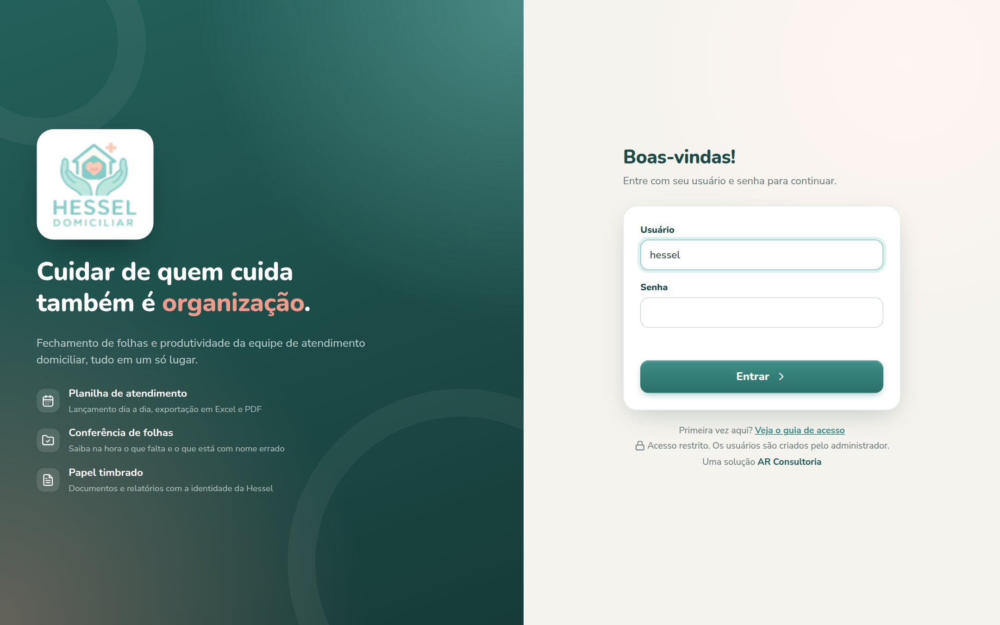
Tela de entrada. O link "Primeira vez aqui?" abre este guia.
Trocar a senha
No canto de baixo do menu, ao lado do seu nome, clique no ícone da chave.
Digite a senha atual e a nova duas vezes, com pelo menos 8 caracteres.
Clique em Salvar.
Esqueceu a senha?Fale com a AR Consultoria. Geramos uma nova senha na hora, e todos os dados continuam lá.
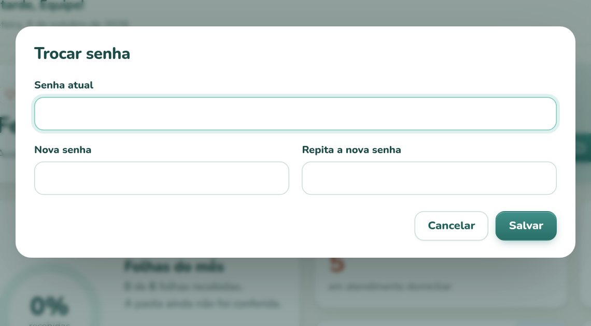
Trocando a senha
Guia da Hessel Domiciliar3
02 Conhecendo o sistema
O painel do mês
Tudo no sistema é organizado por competência, o mês de referência do fechamento. Ela fica no canto superior direito: use as setas ‹› para ir e voltar, ou clique no nome do mês para escolher.
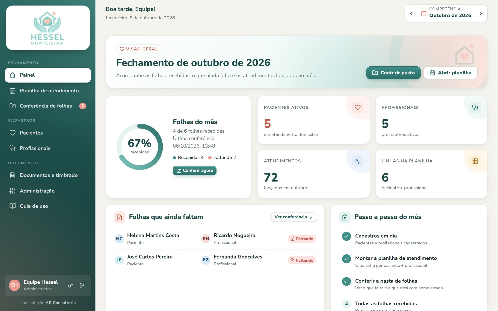
O Painel: progresso das folhas, números do mês, o que falta e o passo a passo
No menu
Para que serve
Painel
Resumo do mês: quantas folhas chegaram, quais faltam e o passo a passo do fechamento.
Planilha de atendimento
Quem atendeu quem e em quais dias. É a lista das folhas que você espera receber.
Conferência de folhas
Compara a pasta onde você salva as folhas com a planilha. O número em vermelho no menu mostra quantas faltam.
Pacientes / Profissionais
Cadastros usados na planilha e no nome dos arquivos.
Documentos e timbrado
Papel timbrado, ofícios, declarações, comunicados e recibos em PDF.
Guia de uso
Abre este guia a qualquer momento.
Guia da Hessel Domiciliar4
03 Pacientes e profissionais
Os cadastros
O nome cadastrado é o que deve aparecer no arquivo da folha. Por isso vale cadastrar cada pessoa uma única vez, com o nome completo escrito do jeito certo.
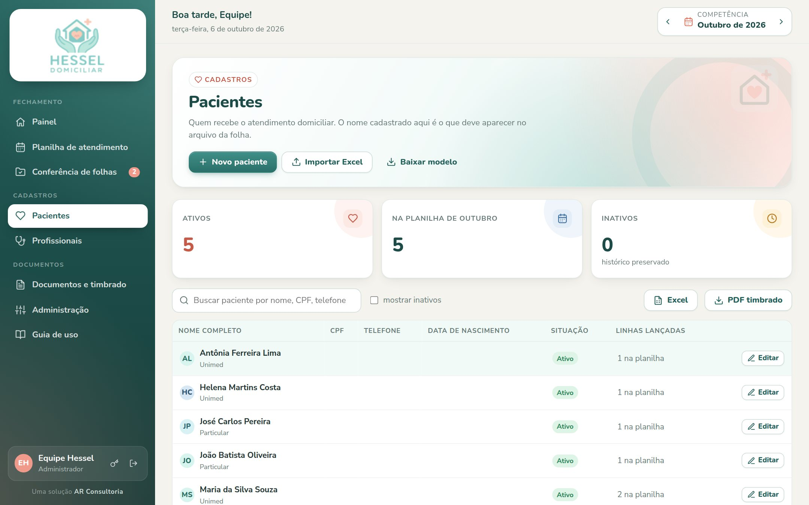
Tela de Pacientes (a de Profissionais é igual)
Trazer a sua planilha do Excel
Clique em Baixar modelo para receber a planilha com as colunas certas.
Cole os seus dados. Só a coluna NOME é obrigatória.
Clique em Importar Excel, confira a prévia e clique em Importar.
Pode importar de novoQuem já está cadastrado é atualizado, não duplicado. Nomes repetidos na planilha viram um cadastro só.
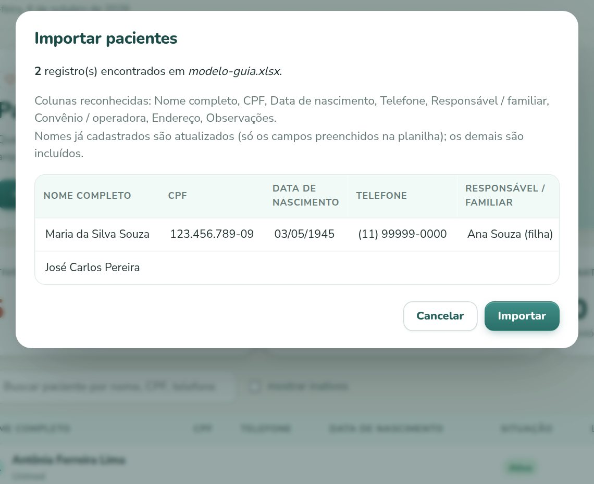
Prévia antes de importar
Cadastro
Colunas aceitas na planilha
Pacientes
NOME, CPF, DATA DE NASCIMENTO, TELEFONE, RESPONSÁVEL, CONVÊNIO, ENDEREÇO, OBSERVAÇÕES
Para cadastrar uma pessoa, clique em Novo paciente ou Novo profissional. Quem já aparece em alguma planilha não é apagado, e sim inativado: some das listas, mas o histórico fica guardado.
Guia da Hessel Domiciliar5
04 Planilha de atendimento
Quem atendeu quem, dia a dia
Cada linha é um paciente + profissional, e cada coluna é um dia do mês. Não existe botão de salvar: tudo fica guardado assim que você digita.
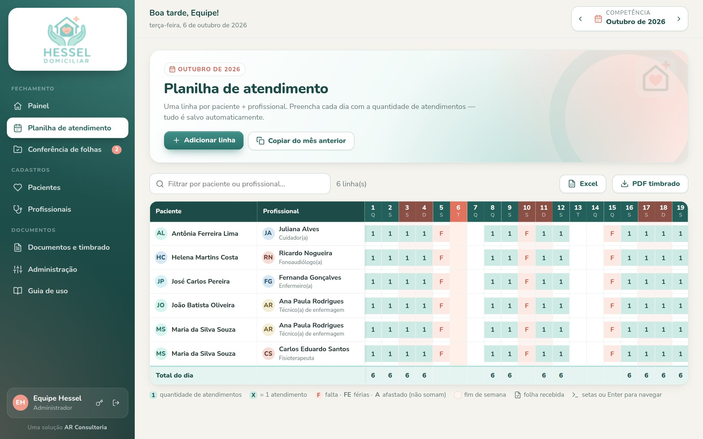
Fins de semana em rosa e o dia de hoje em destaque
Clique em Adicionar linha, escolha o paciente e um ou mais profissionais.
No mês seguinte, use Copiar do mês anterior: as duplas vêm prontas, só os dias ficam em branco.
Preencha os dias. Use as setas do teclado ou Enter para andar entre as células.
Para enviar, clique em Excel ou PDF timbrado.
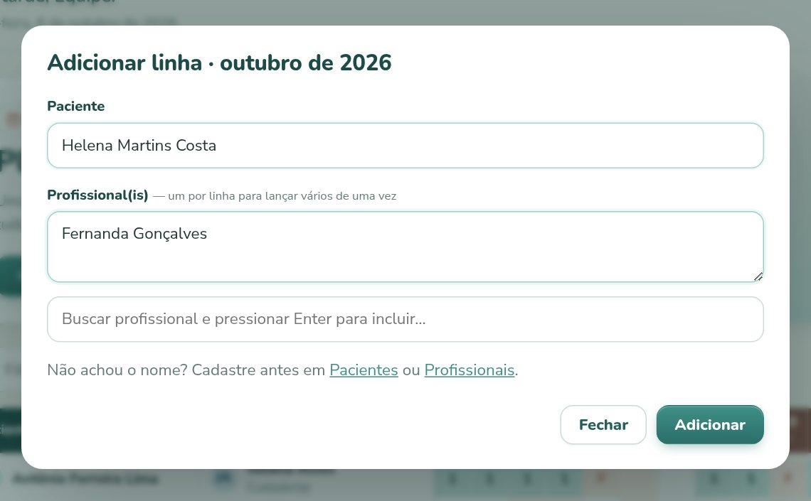
Adicionando uma linha
Digite
Significa
Soma no total?
123
Quantidade de atendimentos no dia
Sim, o número
X
Um atendimento
Sim, vale 1
FFEA
Falta, férias, afastado (ou outro código seu)
Não, só registra
Guia da Hessel Domiciliar6
05 Conferência de folhas
O padrão do nome e a conferência
Ao receber as folhas por e-mail, salve todas na mesma pasta do computador, uma pasta por mês, com o nome neste padrão:
Paciente NOME DO PACIENTE -Profissional NOME DO PROFISSIONAL.pdf
ExemploPaciente Maria da Silva Souza - Profissional Ana Paula Rodrigues.pdf
Conferindo a pasta
Confira se a competência no topo é o mês das folhas.
Em Conferência de folhas, clique em Escolher pasta e selecione a pasta do mês. Se preferir, arraste os arquivos para a área tracejada.
O navegador pergunta se deseja carregar os arquivos: pode confirmar, porque só os nomes são lidos. Em segundos aparece o resultado, que já fica registrado no sistema.
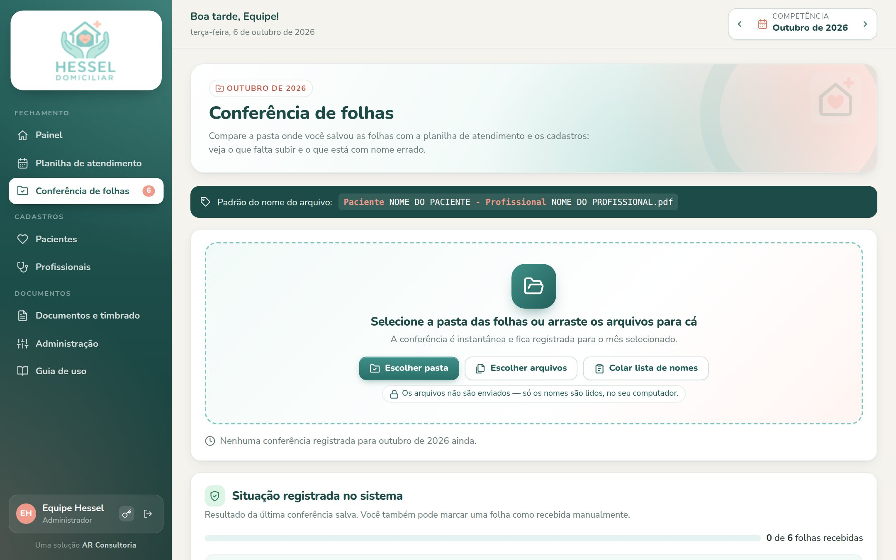
Escolha a pasta ou arraste os arquivos
Seus arquivos não saem do computadorO sistema lê apenas os nomes dos arquivos. As folhas em si não são enviadas para a internet.
Guia da Hessel Domiciliar7
06 Entendendo a conferência
O que falta e o que está errado
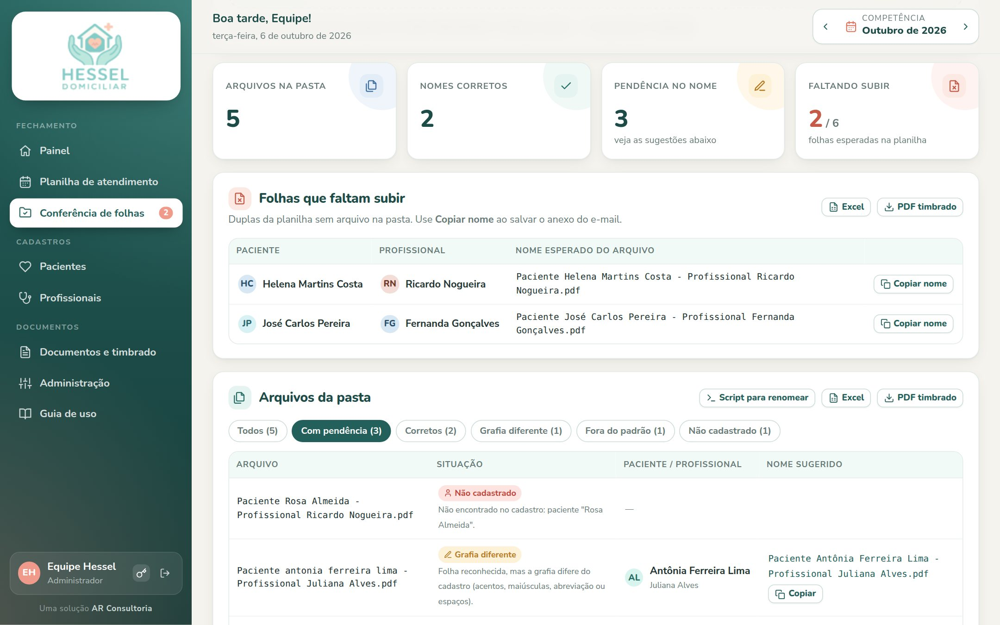
No topo, os números; logo abaixo, as folhas que faltam subir
Folhas que faltam subir são as duplas da planilha sem arquivo na pasta. Ao salvar o anexo do e-mail, clique em Copiar nome e cole como nome do arquivo: ele já sai no padrão.
Situação
O que significa e o que fazer
Correto
Nome no padrão e igual ao cadastro. Nada a fazer.
Grafia diferente
A folha foi reconhecida, mas falta acento, tem maiúscula ou erro de digitação. Use o nome sugerido.
Fora do padrão
O nome não segue o modelo. Se o sistema achou as pessoas, ele sugere o nome certo.
Não cadastrado
Paciente ou profissional que não existe no cadastro. Cadastre ou corrija o nome do arquivo.
Fora da planilha
As pessoas existem, mas essa dupla não está na planilha do mês. Adicione a linha, se for o caso.
Duplicado
Duas folhas para a mesma dupla. Verifique e apague a cópia.
Corrigir vários nomes de uma vezO botão Script para renomear baixa um arquivo .bat. Copie para a pasta das folhas e dê dois cliques: os arquivos são renomeados para o nome sugerido (Windows).
Folha que veio por outro caminho?Em Situação registrada no sistema, clique em Marcar recebida. Ela passa a contar como entregue.
Guia da Hessel Domiciliar8
07 Documentos e papel timbrado
Tudo com a cara da Hessel
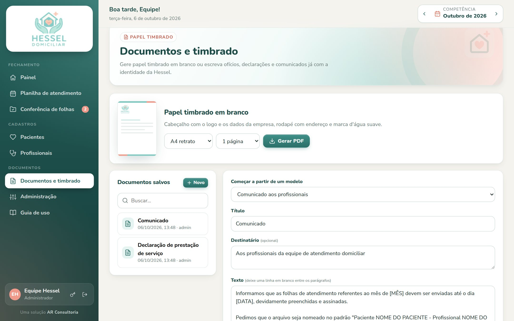
Papel timbrado em branco, documentos salvos e o editor
Escrever um documento
Escolha um modelo: declaração, comunicado, ofício ou recibo. Também dá para começar em branco.
Troque os trechos entre colchetes, como [MÊS] e [VALOR].
Clique em Pré-visualizar PDF e depois em Salvar para reaproveitar.
Deixe a linha em branco entre os parágrafos. O local e data vazio usa a data de hoje.
Exportações em PDF timbrado
Planilha de atendimento, com linhas de assinatura
Folhas que faltam e resultado da conferência
Listas de pacientes e profissionais
Papel timbrado em branco, em retrato ou paisagem
Todas também saem em Excel.
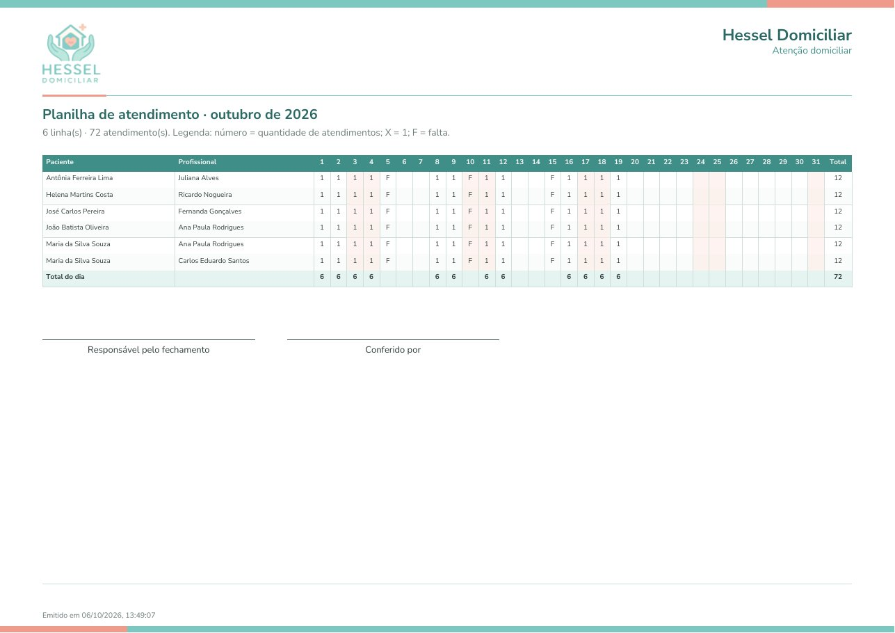
A planilha de atendimento exportada em PDF timbrado
Guia da Hessel Domiciliar9
08 A rotina do mês
O fechamento em quatro passos
1Abrir o mêsEscolha a competência e use Copiar do mês anterior na planilha.
2Lançar os diasPreencha a planilha de atendimento à medida que as informações chegam.
3Salvar e conferirSalve as folhas do e-mail na pasta do mês, no padrão, e confira a pasta.
4Fechar e enviarResolva as pendências e exporte a planilha em PDF ou Excel.
Confira quantas vezes quiserCada conferência substitui a anterior. Salvou mais folhas? Escolha a pasta de novo e o painel se atualiza.
Área do administrador
Quem tem perfil de administrador vê o item Administração no menu, com quatro áreas:
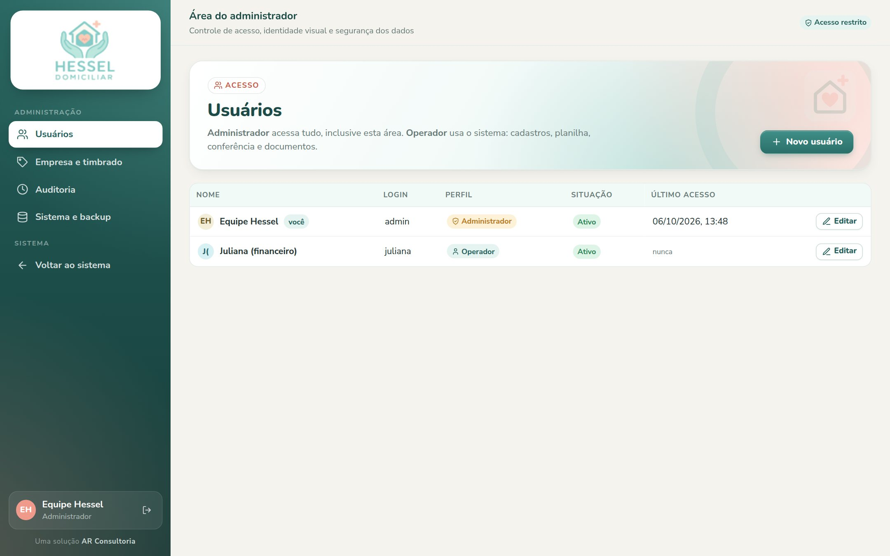
Administração: usuários
Usuários
Criar acessos, definir o perfil (administrador ou operador), bloquear e redefinir senha.
Empresa e timbrado
Logo, CNPJ, telefone, e-mail e endereço que aparecem em todos os PDFs.
Auditoria
Quem fez o quê e quando.
Sistema e backup
Baixar uma cópia completa dos dados. Recomendamos uma vez por semana.
Guia da Hessel Domiciliar10
09 Dúvidas frequentes
Respostas rápidas
O botão "Escolher pasta" não aparece ou não funciona.
Use o Google Chrome ou o Microsoft Edge no computador. Outra opção é selecionar os arquivos com Escolher arquivos (Ctrl + A dentro da pasta) ou arrastá-los para a área tracejada.
A folha está na pasta, mas aparece como faltando.
Quase sempre é o nome do arquivo. Veja a lista Arquivos da pasta: ela mostra o motivo e sugere o nome certo. Confira também se a competência no topo é o mês dessa folha.
Um paciente tem dois profissionais. Como fica?
São duas linhas na planilha e duas folhas na pasta, uma para cada profissional.
Errei um dia na planilha.
É só clicar na célula e corrigir. Para apagar, deixe a célula vazia. Tudo é salvo na hora.
Um profissional saiu da equipe. Apago o cadastro?
Não é preciso. Em Editar, clique em Inativar: ele some das listas e o histórico dos meses anteriores continua guardado.
Mais de uma pessoa pode usar ao mesmo tempo?
Sim. Cada pessoa tem o próprio usuário, criado pelo administrador, e todos veem os mesmos dados.
Posso usar no celular?
Sim, para consultar o painel e a planilha. Para conferir a pasta de folhas, prefira o computador.
Precisa de ajuda?
Fale com a AR Consultoria pelo mesmo canal em que você recebeu o seu acesso. Estamos aqui para ajudar você a tirar o melhor do sistema.
Guia da Hessel Domiciliar · Uma solução AR Consultoria11